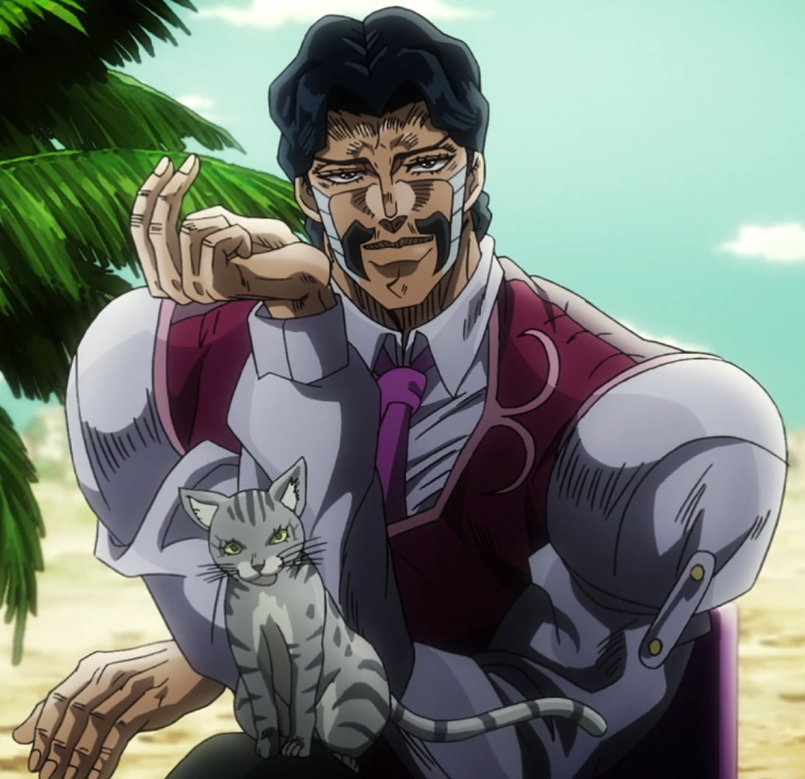

The goal of Blackjack is have your total card value closest to 21. If you go over 21, you LOSE. In this game, you are able to bet money. You are given $1000 to start with and you can choose the disired amount to bet. However, if your bank goes empty, it's game over.
Our game is based on episode 34 and 35 in the JoJo's Bizarre Adventure: Stardust Crusaders: Season 2 anime. This anime is about Jotaro Kujo, the main protagonist of the show, along with his crew, travelling to Egypt to defeat Dio Brando, an immortal vampire that wants to kill off the entire Jostar bloodline. Upon Jotaro's arrival in Egypt, they quickly encounter one of Dio's servants, Daniel J. D'Arby.
A servent of Dio that loves to gamble. He is a gambler that is very confident in his ability in card games, especially Poker. He processes a deadly stand named "The Osiris" which has the ability to take souls of the oponents he defeat in chips. D'arby's mission is to defend Dio by defeating Jotaro's crew in a poker game.